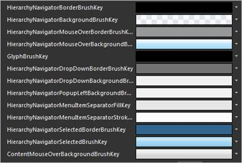
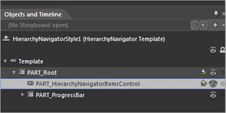
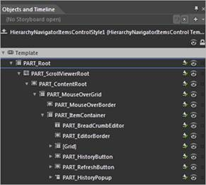
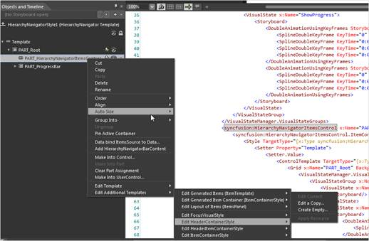
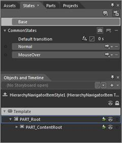
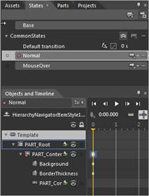

The steps to customize templates by using Expression Blend are as follows:
1. Create a new application in Expression Blend. Refer Creating a HierarchyNavigator control by using Expression Blend.
The following are the default resources, which are used for HierarchyNavigator control that can be changed in Expression Blend.

Figure 591: Default Resources for Hierarchy Navigator
2. Right-click the HierarchyNavigator control and select Edit, then select Style, and type a name.

Figure 592: HierarchyNavigator in Expression Blend
3. Right-click the HierarchyNavigatorItemsControl and select Edit, then select Template, and then select Edit a Copy, to edit the Refresh button, the History button, or the overall content. Additional styles (templates) can be used to edit a template available in the HierarchyNavigatorItemsControl class.

Figure 593: HierarchyNavigatorItemsControl in Expression Blend
4. Right-click the Part_HierarchyNavigatorItemsControl and select Edit, and then select Additional Templates. A list of additional styles to edit will be displayed. Figure 40 displays the style names.

Figure 594: Edit Additional Templates
Figure 595: Additional styles illustrated
5. Storyboards used in the VisualStateManager of every control are easy to customize and manage.
6. For example, the HierarchyNavigatorItem control has two states: Normal and MouseOver. This is available on the States window, which can be accessed by clicking the Window menu and selecting States.

Figure 596: States window
7. Click the Visual State name, to edit the storyboard.

Figure 597: Editing the storyboard
 Customized sample styles
Customized sample styles